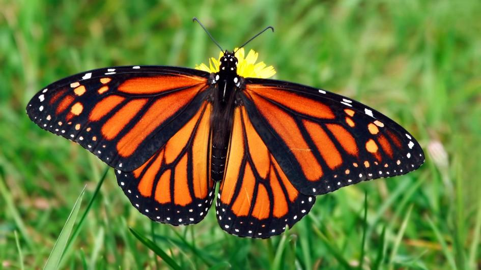
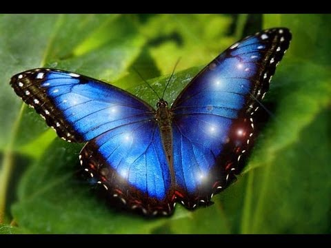
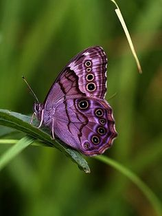
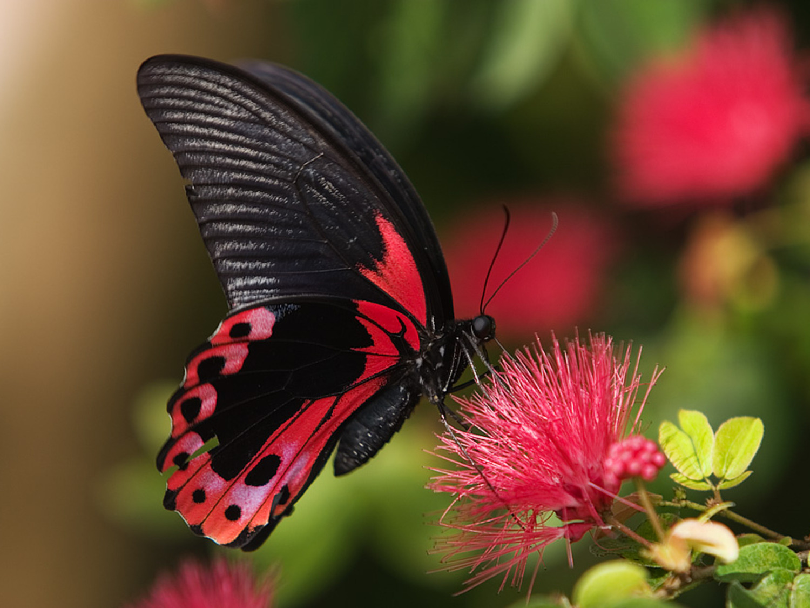
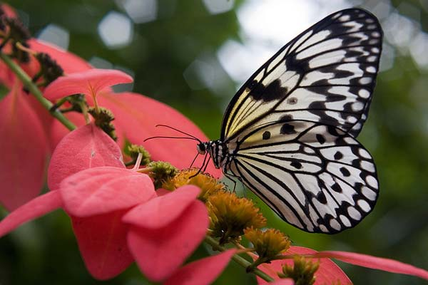

Butterflies are insects in the clade Rhopalocera from the order Lepidoptera, which also includes moths. Adult butterflies have large, often brightly coloured wings, and conspicuous, fluttering flight. The group comprises the large superfamily Papilionoidea, along with two smaller groups, the skippers (superfamily Hesperioidea) and the moth-butterflies (superfamily Hedyloidea). Butterfly fossils date to the Palaeocene, about 56 million years ago.
Butterflies
Monarch Butterflies
 Monarch ButterflySome say Monarch Butterflies are the most beautiful of all butterflies, and are considered the "king" of the butterflies, hence the name "monarch".
Fall Migration
Unlike most other insects in temperate climates, Monarch Butterflies cannot survive a long cold winter. Instead, spend the winter in roosting spots. Monarchs west of the Rocky Mountains travel to small groves of trees along the California coast. Those east of the Rocky Mountains fly farther south to the mountains of Mexico. The Monarch's migration is driven by seasonal changes. Day length and temperature changes influence the movement of the Monarch.
In all the world, no butterflies migrate like the Monarchs of North America. They travel much farther than all other tropical butterflies, up to three thousand miles. They are the only butterflies to make such a long, two way migration every year. Amazingly, they fly in masses to the same winter roosts, often to the exact same trees. Their migration is more the type we expect from birds or whales. However, unlike whales, individuals only make the round trip once. It is their children's grandchildren that return south the following fall. When the late summer and early fall Monarchs emerge from their pupae, or chrysalides, they are biologically and behaviorally different from those emerging in the summer. The shorter days and cooler air of late summer trigger changes. In Ohio this occurs around the end of August. Even though these butterflies look like the summer adults, they won't mate or lay eggs until the following spring. Instead, their small bodies prepare for a strenuous flight. Otherwise solitary animals, they often cluster at night while moving ever southward. If they linger too long, they won't be able to make the journey; because they are cold-blooded, they are unable to fly in cold weather.
Attracting Butterflies
Plant your garden in full sun. Butterflies need sun to warm their bodies for flight. Also, be sure the area is sheltered from the wind, by trees, shrubs, or a building.
Plant butterfly-attracting flowers. Butterflies are attracted to flowers where they can drink nectar. Select plants that are native to the area and they will attract local butterflies. Plant in masses, not in single plants, to optimize colors and scents and to minimize weeds. Select a number of plant varieties so the garden is in bloom all season long. Mix annuals and perennials for optimal effect.
Include host plants in your garden. If you want more butterflies in your garden provide for caterpillars. Butterflies lay their eggs on host plants that the emerging caterpillar will eat. You may want to designate a separate area for these, away from the main flower garden.
Use colorful plants. Butterflies see more colors than humans do. They seem to prefer red, orange, yellow, purple, and dark pink with single or clustered flowers. A large colorful garden is easy for butterflies to find and encourages them to stay longer.
Place dark stones in your garden. Butterflies will lay on the stones with their wings open to warm their bodies. This is known as basking. Only when their body temperature is about 85 − 100°F can they fly well.
Place a bucket of wet sand or a small mud puddle near your garden − an important source of nutrients such as amino acids and salt for male butterflies. These nutrients are needed for survival and reproduction. When males gather in these areas, it is called puddling.
Do not use chemical pesticides. Butterflies are insects Pesticides will kill your butterflies, caterpillars and other useful insects. Try marigolds, petunias, mint, and other herbs that naturally repel insect pests. Encourage ladybugs and dragonflies. When absolutely necessary wash pests away with your own homemade spray of mild soapsuds. Also, try to develop a tolerance for a chewed leaf or two.
Each butterfly needs a specific host plat where it will lay eggs. Learn about local butterflies, so you can provide the right match of plants to make your garden the butterflies' favorite.
All your hard work will be worth the effort as the butterflies fly from flower to flower enjoying the nectar plants and begin a new life cycle on the host plants in your own back yard.



